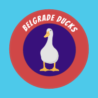

EKIPE
Tine Kavtičnik Belgrade Ducks

Team owner: Tine Kavtičnik
Joined league: 2021 (season 5)
History: /
Arena: STARK Arena
Capacity: 19.000
Location: Belgrade, Serbia
Average ranking: 8.25 (13th)
| Sezona | Uvrstitev |
|---|---|
| 2017/18 | ///// |
| 2018/19 | ///// |
| 2019/20 | ///// |
| 2020/21 | ///// |
| 2021/22 | 6 |
| 2022/23 | 6 |
| 2023/24 | 12 |
| 2024/25 | 9 |
| 2025/26 | ... |
| AVERAGE | 10.00 |
Intervju - TINE KAVTIČNIK (september, 2022)
Z nami je mlajši in manj nadležni brat Kavtičnik, s katerim smo se na kratko pogovorili o pričakovanjih in preteklih sezonah.
1) Prvo vprašanje za vas leta 2022 je bilo "ali se boste letos bolj dali zraven", ker se nam je zdelo, da bi vas to lahko popeljalo zelo visoko. 2 leti kasneje je situacija enaka. Komentar?
Malo smo se navajali na teren, zdaj imamo dovolj izkušenj in znanja, da poskušamo priti do lovorike.
2) Ali še vedno poslušate starejšega brata kar se tiče izborov na naboru, ali pa zdaj vendarle izbirate po svoji lastni pameti?
Matevževo nabijanje, da mi je pomagal izbrati ekipo je klasičen BS in izgovor, ker je bil on obupno slab. Vedno ekipo izbiram po svojem občutku.
3) Katerega Fantasy managerja se bojite toliko kot Jezernikov IRL?
Dejstvo je, da se Jezernikov in njihovega stratega ne bojimo, enako je tudi v fantasy ligi - ne bojimo se nobenega.
Zaključna misel
Pohvale grafičnemu designerju, logotip nam je izjemno všeč. Srečno Tinetu v sophomore sezoni in videli bomo ali se bo držal svojih obljub o resnosti.